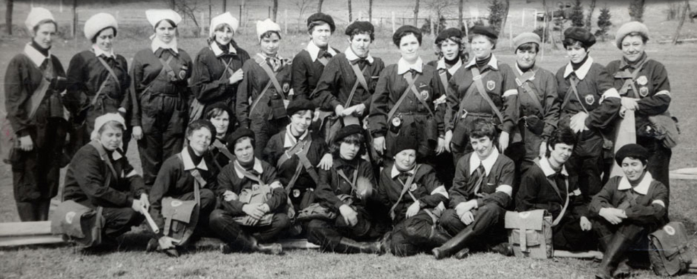
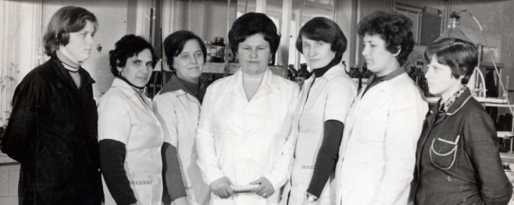
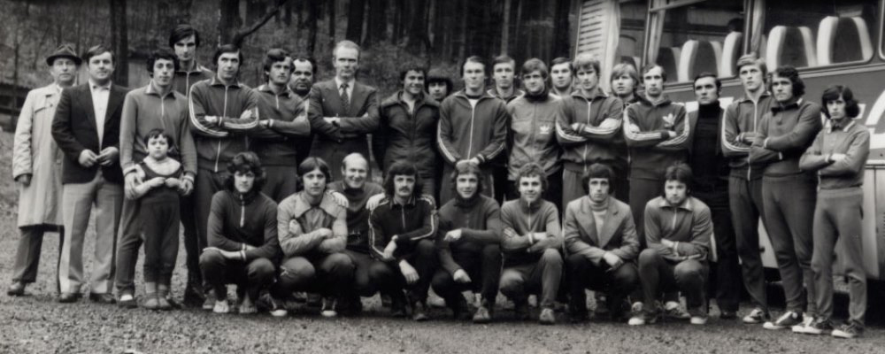

HISTOIRE
Combinat chimique de transformation du bois Peretchyn – Evolution au fil du temps
PreviousNext


1914
Fondation de la société anonyme ouverte «Combinat chimique de transformation du bois Peretchyn»
Il appartenait à la société anonyme autrichienne – hongroise
BANTLIN, qui produisait en général le charbon de bois, l’acide
acétique et d`autres produits du bois de hêtre.
Les années 1920-30
Pendant les années 1922 et 1923 quelques projets de reconstruction ont été réalisés.
Par exemple le transfert de tout l`équipement à l`alimentation
électrique ce qui a beaucoup élargi la puissance du combinat,
c`était son âge d`or. Mais la crise économique mondiale de
1929 a causé les désavantages au combinat qui était obligé de
licencier les ouvriers et même de suspendre la fabrication.

APRES LA DEUXIEME GUERRE MONDIALE
Le montage du nouvel équipement et la réorganisation de la
fabrication ont contribué au rétablissement rapide de
l`entreprise après la guerre.
En 1957 on a lancé la production des résines Urée-Formol. En
1962 on a commencé l`exploitation de la cornue permanente, la
deuxième en URSS.

Les années 1970-80
Les nouvelles cornue et chaudière à vapeur ont été installées et elles ont commencé à fonctionner.
Quelques événements importants de cette période sont: le
transfert de tout l`équipement à l`alimentation du gaz, la
mise en fabrication de la résine urée et la construction d`un
nouvel atelier de l`acétate d’éthyle qui était équipé d`une
technologie de pointe.

Les années 1990
Les années 1993-97 constituent la période la plus dure dans
l`histoire du combinat. La situation instable en ex-URSS a
frappé brusquement l`industrie ukrainienne.
Pendant deux semaines le combinat a subi la chute
profonde. Aucune entreprise ne peut éviter le ralentissement économique
et le combinat aussi. Tandis que la production de l`acétate
d’éthyle a baissé, la production des résines Urée-Formol a
connu la croissance.
1998
Cette année est marquée par l`apparition sur scène du
propriétaire actuel du Combinat chimique de transformation du
bois Peretchyn représenté par LTD «GROUPE POLYPROM»
Au cours de la privatisation LTD «Groupe Polyprom» a acheté la
participation majoritaire de la société et est devenue son
propriétaire principal. De nouvelles idées et directions ont
monté le Combinat chimique de transformation du bois Peretchyn
représenté par au niveau actuel.
2004
La mise en exploitation de la deuxième cornue verticale, ce
qui a augmenté notre puissance dans la production du charbon
de bois jusqu`à 25 000 tonnes par an.
2008
L`usine était certifiée selon ISO 9001:2000.